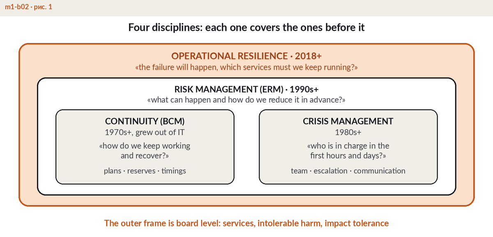

Every company depends on a short list of processes that generate its revenue and hold its licence to operate: taking payments, shipping orders, treating patients, settling trades. BCM answers three questions about that list. What could interrupt these processes? How long can each of them stand still before the damage becomes unacceptable? And what exactly have we prepared, tested and budgeted so that recovery happens within that time?
For a chief executive the practical definition is even shorter: BCM is the evidence that your organisation can take a hit and keep serving customers. It is not a binder on a shelf. A working system has a named owner, board-approved targets, a budget line and test results — the same attributes as any other management capability. The economics are straightforward: a company losing USD 100,000 per hour of downtime looks at continuity investment the way it looks at insurance, except that here the premium buys speed of recovery rather than compensation after the fact.
The four disciplines are neighbours, not synonyms. Risk management works before the event: it reduces the likelihood that a disruption happens at all. Business continuity assumes the event has already happened and manages impact over time. IT disaster recovery (DR) is a technical subset of BCM: restoring systems and data. BCM also covers what DR does not — people, sites, suppliers, communications and the business processes that sit on top of the technology. Operational resilience is the wider, regulator-driven lens: it asks whether your important business services stay within impact tolerance whatever the cause. BCM is one of the main engines that make that outcome possible, alongside broader organisational resilience.

A working system stands on five elements, and each of them produces evidence a board can inspect.
Days 1-30: appoint an accountable owner, approve a one-page policy, and list the top products and services the company cannot afford to lose. Days 31-60: run a BIA for the five to ten most critical processes, agree recovery targets for each, and map the dependencies — systems, people, suppliers, single points of failure. Days 61-90: write first-hour playbooks for the two most damaging scenarios, run a tabletop exercise with the executive team, and report the gaps to the board with a costed roadmap. Ninety days will not make you certifiable, but they convert BCM from an intention into a working programme. The governance architecture behind this sequence — roles, policy, board reporting — is covered in module M1 of the ERGP programme.
If your operations sit in the Gulf, add the regulatory context to this picture — start with our guide to business continuity in the UAE.
This topic is part of the working language of ERGP — the first resilience governance certification fully available in Arabic, also in English. 94 chapters, six modules, a verifiable certificate.
Explore the ERGP programme